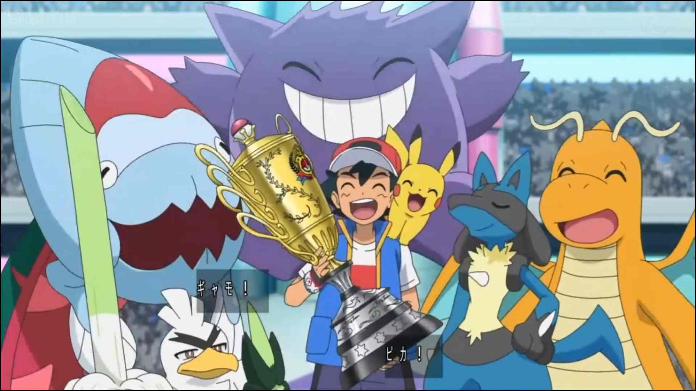
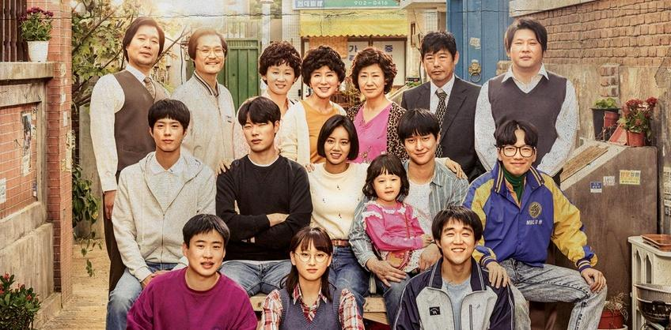
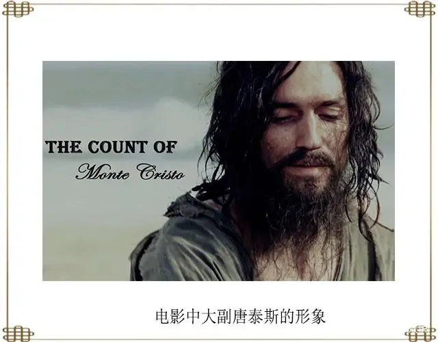
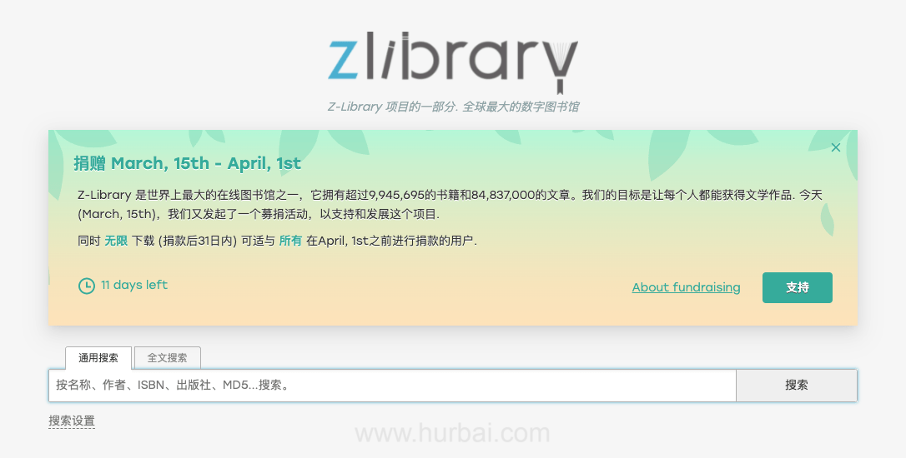
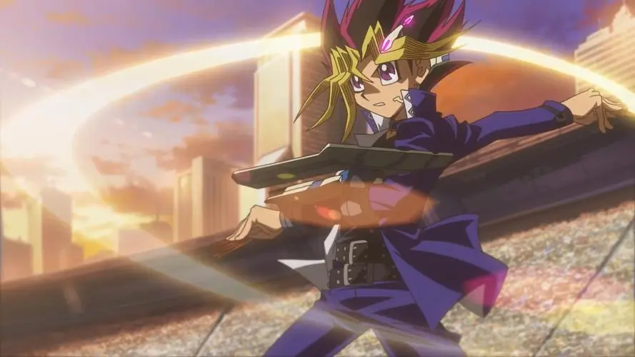

2022-11-11 置顶
小智成为宝可梦世界锦标赛冠军, 皮神友情十万伏特战胜丹帝喷火龙
从我大概三四岁的时候就喜欢看宠物小精灵，那时候最喜欢小智的皮卡丘，觉得皮卡丘很奇怪总是不想进精灵球，但是也觉得它特别可爱
后来几乎每一部宠物小精灵都看过，虽然有的没有看全，小智乐观积极的态度也帮助我很多
小智是一个非常重视宠物小精灵的人，他不论再什么地区，遇到什么宝可梦，只要是它处在危险之中，小智总是奋不顾身前去拯救，所以有好多小精灵都是自愿加入小智的队伍的
小智也是一个十分重视行动的人，他总是不计后果，不会考虑自己做不做得到，只是去尝试，而且不会轻易放弃，从初代对皮卡丘进行电击特训，再到xy对皮卡丘进行抗风特训，无论遇到多么强大的对手，他都不会放弃
我最喜欢小智和皮卡丘之间的默契，小智每次旅途都会换一只宠物，但是每一次都会留下皮卡丘，皮卡丘遇到危险小智总是第一个挡在它前面，而小智危险的时候皮卡丘也爆发出最大的能量。
这么多年了，虽然我知道小智是虚拟的，但是还是向对你和皮卡丘祝贺，恭喜你实现了自己的梦想，成为了不折不扣的宝可梦大师.
2022-11-05
我最喜欢的男演员：卷福
初中的时候读了一部分福尔摩斯探案集，对福尔摩斯的样子充满遐想
在我第一次看神探夏洛克时，那时候是在初中小饭桌和朋友们在河北卫视看的，后来我记忆中的福尔摩斯就成为了他这样，我从小就喜欢天才，但是自己不够聪明，卷福太适合演天才了，满足了我对天才的向往
他参演的霍金传、模仿游戏、奇异博士也是我很喜欢的电影
2022-11-05
我最喜欢的女演员：Anya Taylor-Joy
我第一次接触到安雅是在后翼弃兵中，她演的天才象棋少女很独特，通过对人物的内心的渲染，童年的经历，和她的一步一步的成长和迷失都很打动我
我最初喜欢她一部分是源于她的声音，她的混杂了好多国家口音的英语我认为十分动听，给了我即使口音不纯正依然能讲好英语的信心
我从油管看过一些她的采访，她也是一个幽默风趣的人，我认为她演得艾玛也是难得的佳作
clannad:团子大家族
第1-1集
对不起，由于技术原因，平板请使用浏览器的电脑模式观看，手机请不要使用浏览器的电脑模式观看，如仍然无法观看去B站搜clannad即可
这个动漫是我最喜欢的一部动漫，我认为里面的每一个人物都个性鲜明，并且有很好的治愈和教育的意义，有人说这部动漫讲述了人生，我也有同感。应该好多人都看过，但是我还是想向大家推荐。
2022-11-09
我看的第一部韩剧：我的大叔
刚刚准备跨考时，我的父母都不是很支持，我自己其实也不知道这个抉择对不对，当时加上隔离内心有些担忧，这时我偶然从b站推荐栏偶然看到这个视频，看到豆瓣评分竟然有9.4分，就试着看了一集，后来对女主李至安的独立、坚强、对生活的冷漠以及对善良的看法都感触颇深，很快就看完了整部。
故事的女主角是一个没有很小就失去父母、有着沉重的债务、需要赡养年迈的奶奶以及因自我保护而杀人封闭了内心的一个女孩。后来，她和正常人一样成为了一个普通却幸福的人，这中间经历了什么，我就不剧透了。
我常常在想，有多少处境可怜的孩子，因为没有人对他们进行正常的引导而远离光明和幸福，如果以后你遇到了这样的人，请一定努力帮助他，我们要向身边的迷失的人树立正常的价值观，让他们有一个幸福的未来

2022-11-09
我看的第二部韩剧：请回答1988
看完我的大叔之后我对高分韩剧有了不一样的认识，从知乎上搜了搜，看到有很多人推荐 请回答1988 我就也抱着尝试的态度看了
这部片讲述的是首尔的一个小镇上的关于亲情和友情的故事，故事中的几个年轻人从小时候就在一起玩耍，直到高中毕业，这部剧中有很多性格鲜明的角色，有很穷却总是帮别人买卖剩下的东西的父亲，有虽然总是欺负妹妹确努力且善良的姐姐、有围棋天赋极高却总是依赖其他人的天才崔泽六段、有学习成绩差却积极且乐于助人的女主角成德善，还有好多人
他们大家总是把自己家的菜分给大家，帮其他人带孩子或是在其他人家里长时间借宿。对于不怎么和邻居交流的我，这种关系令我十分羡慕

2022-11-10
舍友推荐:<<基督山伯爵>>
这是我大学看的几本书之一，是我的舍友推荐的，由于我从小不喜欢读书，所以打算大学的时候补一补，于是就选择了这本书
这本书不像其他外国小说，比较晦涩，它读起来很流畅，每个章节都很吸引人，所以我几乎很快就读完了，作为我看的第一本长篇小说，它成功的引起了我对读书的兴趣
主角唐戴斯原本是一名大副，做人真诚、善良、有能力，就在马上迎来自己的幸福的时候，被人陷害，关在地牢里14年，在这14年，他经历了对自己的怀疑、对未来的失望，因遇到一名老者，后变得博学多才、举止文雅，最后一步一步完成复仇，重新找到自己的幸福的故事
如果你也正处于绝望之中，想一想当时没有犯任何错误却在监狱里呆了14年的唐戴斯吧，相信光明的未来一定会到来，只要自己不放弃
名言名句
如果你渴望得到某样东西，你得让它自由，如果它回到你身边，它就是属于你的，如果它不会回来，你就从未拥有过它。
(点击图标切换至下一个名言)

2022-11-12
奉献型网站/app：zlibiary、歌词适配等
我非常喜欢电子书，因为可以用手机平板随时阅读，不用背着重重的书包，偶然一次我从知乎了解到了zl，哈利波特、蛤蟆先生去看心理医生、毛选、悲惨世界、C语言的书籍、python的书籍都是从这里找的
我知道盗版书是不好的，但是对于一些家庭条件不是很好的学生，这些书很可能可以改变他们的命运，而计算机的黑皮书每本都100多，难道因为承担不起，就应该断送发展的机会吗，这些网站给了我们这些人看到各种各样的书的机会，甚至好多书作者都得不到、书店也没有
zlibiary从来都是以捐款的方式为我们服务的，我不知道他们会不会亏钱，但是我认为每年承担那么多服务器的费用，为我们拓宽视野，是一件值得称赞的事情，即使这些书是盗版，我希望如果以后国家可以支付这些书的版权费，让这种网站光明正大的办下去就更好了
还有歌词适配app也是，全网歌曲都免费下载，而服务器每年需要一千多，他们从未向我们收取任何钱，都是我们自愿捐款的
还有好多的网站软件都是站在浏览者较多思考问题，连广告都没有，几乎没有收入有时还要自己承担服务器费用，这样的网站被封是不可能的，因为有太多的人帮助他们了，以后我如果有能力我也会支持这样的网站，或是自己建立一个这样的网站
2022-11-17
舍友推荐：<<悲惨世界>>
看完《基督山伯爵》之后，我也慢慢喜欢看书了，但是看的很慢，只看了几本，其中看的时间最长，也是印象、感触最深的就是这本书了
文章的人物很多，我最喜欢的就是冉阿让，他只是偷了一个面包，出于我认为正当的理由，但是却被判了很多年，他因为担心自己的家人，于是屡次越狱，最后当了十几年的苦刑犯，通过一个神父对他的帮助与鼓励，触动了他让原本麻木的他，重新找回了善念，他为了对自己以前不是很严重的错误进行弥补，用了一生的时间来赎罪，他后来一直在做好事，但是却始终认为自己是一个罪人，直到生命的末尾才解脱
我很喜欢其中的一段话，“您从那个苦地方出来，如果还有愤怒憎恶别人的心，那您真是值得可怜的；如果您怀着善心、仁爱、和平的思想，那您比我们中的任何人都还高贵些”
这个文章告诉了我一件很重要的事，一个曾经坠入深渊的人，如果他能彻底悔悟，就比从未进入深渊的人，都要更伟大。我也希望我们每一个人都能意识到“自己脚下的40苏硬币”，意识到“两个银质烛台”，现实中可能没有“主教”一样的人帮助我们，但是我们自己也要真诚的对待自己。

2022-11-25
入坑卡牌的动漫之一：游戏王
大概是大一下学期放假后，吃饭时无聊就从电视上看到有这个动漫，本想打发时间，就随意找了一集，那集是用对手的天空龙和对手的复活史莱姆的OTK，直接被吸引，对手有一只攻击力上万的怪兽天空龙而且随卡牌数增多攻击力会继续上升，有2万多的血量，一个再生史莱姆可以复活，又通过一张永续魔法卡让攻击天空龙的伤害由史莱姆承担，又有一张永续魔法卡的效果是每次有怪兽复活，就抽三张牌，而且天空龙效果对方怪兽如果攻击小于2000直接使其死亡。在这个几乎是有着绝对攻击和绝对防御的组合下，阿图姆用一张洗脑就解决了，洗脑可以获取对方一直怪兽的使用权，但对神兽天空龙无效，他选择获取复活史莱姆的使用权，由于天空龙效果会将其消灭，由于永续魔法效果再抽三张牌，但是史莱姆会复活，所以会无限循环，直至自己抽光手牌直接判负
就是由于上面的OTK我一下子对卡牌有了兴趣，后来又看了第二部、第三部直到第六部，了解了除上级召唤外的融合、同调、超量、灵摆、链接等召唤之后，对灵摆产生了极大的兴趣，所以后来我用非主流灵摆卡组魔术师成功在master duel中获得最高段位，之所以喜欢魔术师卡组是因为它几乎拥有所有召唤方式也能解决各种情况，但是得看卡组是否回应你，虽然现在环境魔术师已经不行了，但是我还是相信灵摆和魔术师都有无限的可能
2022-11-25
最喜欢的词人：苏轼
高中前，我最喜欢南唐后主李煜的诗词，因为我比较喜欢李煜简单直率的表达。但是等我看了一些关于李煜的书和资料后，我发现他还是有些问题，尽管对自己的曾经的手下很好，而且也能为了国家忍受耻辱，但是他终究没能保护自己的妻子小妾，也使自己的国家亡国，太过闲散、软弱。
后来，在高中很多人都喜欢苏轼的词，我就了解了一下，觉得苏轼也不太顺利，但是他却能过的还算很欢乐，而且他也很重视自己的妻子王弗，“十年生死两茫茫，不思量自难忘”是我比较喜欢的句子之一。
他的乐观豁达也很吸引我，我最喜欢的一句词是："回首向来萧瑟处，归去，也无风雨也无晴。"，面对自己的失意，他并没有觉得是特别的，他觉得都是自己所经历的事情而已，至于是不是苦难只是理解的不同。
还有他写的"枝上柳绵吹又少，天涯何处无芳草。"、“休对故人思故国，且将新火试新茶，诗酒趁年华。”、“谁道人生无再少？门前流水尚能西！休将白发唱黄鸡。”等等都对我有很重要的影响。

{kind=link}